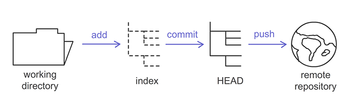

Git is a very powerful distributed version control system. The website for git is: https://git-scm.com/. You can download Git for your system from there.
To create a new repository (repo) take the following steps:
$ mkdir Jike
$ cd Jikeinit operation as follows:$ git initThis creates a new repository!
You can create a local copy of a repo by doing the following:
$ git clone /path/to/repoWhen using a remote server, your command might look like this:
$ git clone https://github.com/broughtj/Jike.gitThis will create a local directory that “clones” the whole repository. This is what is meant by “distributed” in distributed version control system.
You local repo consists of three “trees” maintained by git:

You can propose changes (i.e. add it to the Index) using the following:
$ git add <filename>Or for multiple files all at once:
$ git add --allOr
$ git add .To actually commit these changes (i.e. stage them), do the following:
$ git commit -m "Helpful commit message!"Now the file(s) is commited to the HEAD, but not in your remote repo yet!
Your changes are now in the HEAD of your local working copy of the repo. To send those changes to your remote repo, do this:
$ git push origin masterChange master to whichever branch you are wanting to push.
If you have not yet connected your local repo with a remote repo, you can as follows:
$ git remote add origin <server>This will connect them.
N.B.: that’s NOT our typical workflow though!
Branches are used to develop features isolated from each other. The master branch is the “default” branch when you first create a repo. You can use other branches for development and testing and then merge them back to the master branch once you have worked out more permanent features that you want to add.
N.B.: draw picture!
To create a new branch:
$ git checkout -b feature_xTo switch back to master:
$ git checkout masterYou can delete the branch:
$ git branch -d feature_xA branch on your local copy of the repo is not available to others unless you push it to the remote repo:
$ git push origin <branch>To update your local repo to the latest commit:
$ git pullThis will fetch and merge remote changes.
To merge another branch into your active branch (e.g. master), do:
$ git merge <branch>Git is pretty smart and will attempt to auto-merge changes. Unfortunately, sometimes there will be conflicts. You are responsible to merge those conflicts manually by editing the files shown by git. After you do so:
$ git add <filename>If you want to check for differences before merging, you can execute:
$ git diff <source-branch> <target-branch>N.B.: also $ git status is your friend!